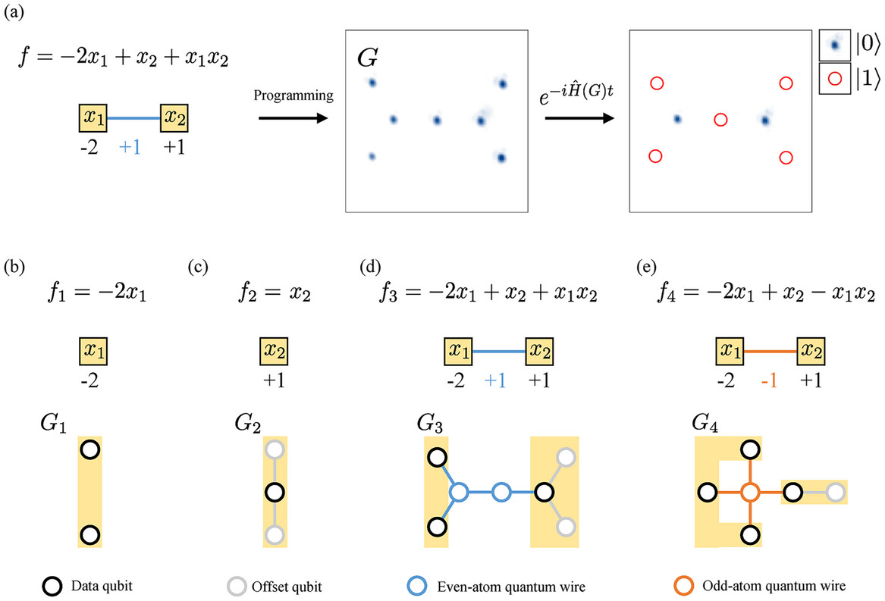

Topologically ordered phases in (2+1)-D are characterised by c −ç, the chiral central charge in the edge-state CFT. Numerical extractions overshoot when the state only approximately obeys an area law. We derived analytic bounds on excess mutual information and a correction term that restores quantisation of c −ç to ±0.01. Benchmarking is underway on tensor-network simulations of non-Abelian FQH states.
For systems with non-degenerate energy gaps we proved that states reachable under Gibbs-preserving covariant channels coincide exactly with those reachable via Thermal Operations (TO). The catalytic construction extends resource-theoretic thermodynamics to arbitrary finite-dimensional Hilbert spaces. Ongoing work analyses the complexity of deciding TO-reachability.
We mapped sparse QUBO instances onto planar arrays of laser-dressed Rydberg atoms, realising Ising couplings via van-der-Waals interactions. The scheme reduces ancillary overhead by ≈30 % compared with minor-embedding and was published in Adv. Quantum Technol. 2024 . I led the graph-embedding algorithm and Python simulations up to 200 qubits.
